Wireless & Mobile Networks
Pertemuan 14
Pendalaman Ekstensif: WiFi, Sinyal Radio, Cellular (4G LTE/5G), & Mobilitas
Referensi: Bahan Ajar Week14.pptx & RPS Jaringan Komputer
Dosen Pengampu:
Goals & Overview
Fokus Pertemuan 14:
- Wireless: Membedah karakteristik fisik medium komunikasi (sinyal radio) dibandingkan kabel tembaga/optik. Termasuk WiFi 802.11 dan Seluler 4G/5G.
- Mobility: Bagaimana cara sebuah node berpindah lokasi dari satu sel ke sel lain, terputus dari tower lama dan menyambung ke tower baru, tanpa memutus koneksi internetnya?

Elemen Jaringan Nirkabel
- Wireless Hosts: Perangkat akhir (Smartphone, Laptop, IoT). Dapat bergerak (mobile) atau diam/menetap. Ingat: Nirkabel tidak selalu berarti Mobile (contoh: PC desktop tersambung WiFi).
- Base Station: Menjembatani (relay) data dari perangkat nirkabel menuju ke jaringan kabel (infrastruktur internet utama). Contoh: Access Point WiFi, Menara BTS (Cell Towers).
- Wireless Link: Jalur radio frekuensi. Memiliki berbagai batasan laju transmisi, jarak pancar, dan pita frekuensi.

Dua Mode Jaringan Nirkabel
1. Infrastructure Mode
- Semua perangkat HARUS terhubung ke *Base Station* (seperti router AP di rumah).
- Jika perangkat berpindah jangkauan, terjadilah Handoff (pemindahan layan dari satu base station ke yang lain).
2. Ad Hoc Mode
- TIDAK ADA *Base Station* pusat.
- Perangkat mengorganisasi dirinya sendiri. Jika jaraknya terlalu jauh, sebuah node bisa menitipkan paketnya ke node di sebelahnya untuk direlay (*mesh networking*).
Tantangan Fisik Medium Radio
Komunikasi nirkabel JAUH lebih bermasalah dibandingkan kabel tembaga:
- Fading / Attenuation: Sinyal radio otomatis melemah (kehilangan daya) seiring jarak bertambah. (Makin jauh frekuensi/jaraknya, makin parah *path loss*-nya).
- Multipath Propagation: Sinyal memantul di dinding, tanah, dan gedung, menyebabkan sinyal asli dan pantulannya tiba di antena penerima pada waktu yang sedikit berbeda.
- Interference & Noise: Diganggu oleh microwave, motor listrik, dan transmisi perangkat nirkabel tetangga.

Trade-off: SNR dan BER
- SNR (Signal-to-Noise Ratio): Rasio kekuatan sinyal asli terhadap kekuatan sinyal berisik di sekitarnya. Makin besar, makin bagus!
- BER (Bit Error Rate): Persentase paket bit yang rusak saat diterima.
Aturan Emas: Meningkatkan kekuatan pancaran daya perangkat Anda (Power) akan menaikkan SNR, yang pada akhirnya menurunkan tingkat kesalahan data (BER). Tapi ini membuat baterai HP Anda cepat habis.

Hidden Terminal Problem
Masalah klasik di jaringan nirkabel. Bayangkan 3 orang: A, B (di tengah), dan C.
- A dan B saling mendengar.
- B dan C saling mendengar.
- Tetapi karena jarak atau halangan fisik, A dan C tidak saling mendengar (Hidden).
- Akibatnya, A dan C bisa tanpa sengaja mengirim data ke B SECARA BERSAMAAN. Terjadilah tabrakan (Collision) parah di B!
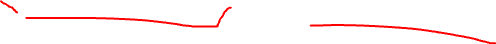
Solusi 1: CDMA (Code Division Multiple Access)
Bagaimana agar A dan C bisa bicara bersamaan tanpa bertabrakan?
- Pada seluler generasi lama (3G/CDMA), setiap perangkat diberi Kode Unik.
- Semua orang berbicara berbarengan pada frekuensi yang persis sama. Namun karena memakai bahasa kode matematika yang ortogonal, Base Station dapat menyaring dan menterjemahkan percakapan A tanpa tercampur ucapan C.

LAN Nirkabel: IEEE 802.11 (WiFi)
Standar IEEE terus berevolusi meningkatkan *Data Rate* dan beroperasi di rentang 2.4 GHz atau 5 GHz:
- 802.11b (1999): Maksimal 11 Mbps.
- 802.11g (2003): Maksimal 54 Mbps.
- 802.11n / WiFi 4 (2009): Maksimal 600 Mbps.
- 802.11ac / WiFi 5 (2013): Maksimal 3.47 Gbps.
- 802.11ax / WiFi 6 (2020): Tembus 14 Gbps.
Semuanya menggunakan protokol MAC yang sama: CSMA/CA.
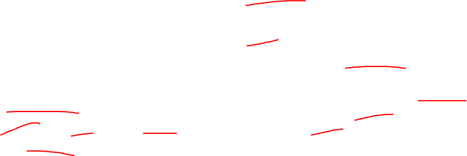
Arsitektur 802.11 (BSS & Channels)
BSS (Basic Service Set): Komponen dasar WiFi, terdiri atas 1 AP (Access Point) dan klien-klien nirkabelnya.
- Pita frekuensi 2.4 GHz dibagi menjadi 11 Kanal yang tumpang tindih (beririsan).
- Admin jaringan harus berhati-hati memilih kanal (misal 1, 6, 11) agar tidak bentrok dengan sinyal AP tetangga kosannya.
Proses Asosiasi WiFi (Passive vs Active)
Sebelum mengirim data, laptop Anda harus "memilih dan bergabung" ke AP lewat Asosiasi:
- Passive Scanning: AP secara rutin menyiarkan *Beacon Frames* ke seluruh area mengabarkan namanya (SSID) misal: `Kos_Aman`. Laptop mendengar dan meminta bergabung.
- Active Scanning: Laptop yang keliling bertanya, "Halo, adakah AP Kos_Aman di sini?" (Probe Request). Jika AP ada, ia akan membalas "Ya, saya di sini."
MAC Protocol WiFi: CSMA/CA
Mengapa tidak memakai CSMA/CD seperti kabel Ethernet?
- Collision Detection (CD) mustahil dilakukan di nirkabel. Perangkat tidak bisa mendengar tabrakan di tempat penerima akibat pelemahan sinyal dan fenomena Hidden Terminal.
- Oleh karena itu kita memakai CA (Collision Avoidance): Mencegah sebelum terjadi!
- Klien menunggu jalan kosong (DIFS), lalu mengirim paket utuh tanpa CD.
- Penerima WAJIB membalas sinyal `ACK` (Acknowledgment) untuk memastikan paket benar-benar selamat.
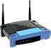
Solusi Hidden Terminal: RTS dan CTS
Langkah ekstra untuk menghindari tabrakan karena Hidden Terminal (Node A dan C tidak saling lihat):
- A mengirim paket reservasi kecil: RTS (Request to Send) ke Base Station.
- Base Station meneriakkan CTS (Clear to Send) ke seluruh area.
- C yang mendengar teriakan CTS akan diam dan "menunda" transmisinya. A bisa mengirim data dengan tenang.
Jaringan Seluler 4G LTE
LTE (Long Term Evolution) adalah arsitektur yang 100% berbasis Paket (All-IP Packet Core), tidak lagi memakai sirkuit analog lawas.
- UE (User Equipment): Smartphone Anda. Memiliki identitas global (IMSI) di SIM card.
- eNode-B (Base Station): Menara operator seluler di pinggir jalan. Berbeda dengan WiFi AP rumahan, tower ini terintegrasi ketat mengatur koordinasi *handoff* secara aktif dengan tower tetangganya.

Arsitektur Core 4G (EPC)
Di balik menara BTS, terdapat infrastruktur besar bernama EPC (Enhanced Packet Core):
- MME (Mobility Management Entity): Otak utamanya. Mengatur otentikasi, pergerakan *handoff*, dan melacak pergerakan lokasi device (paging).
- HSS (Home Subscriber Service): Database sentral pelanggan. Berisi kunci rahasia pelanggan.
- S-GW (Serving Gateway) & P-GW (PDN Gateway): Router gerbang yang men-tunnel lalu lintas IP ke dunia internet luar lewat fungsi NAT.
Multiplexing Seluler: OFDM
Bagaimana satu tower bisa melayani ratusan ponsel sekaligus untuk menonton YouTube?
- 4G memakai kombinasi pembagian waktu dan frekuensi bernama OFDM (Orthogonal Frequency Division Multiplexing).
- Terdapat ratusan alokasi "Kotak-kotak pita frekuensi dan detik waktu" yang terus dibagikan secara adil oleh menara ke ponsel-ponsel klien di bawahnya setiap detiknya.
Dari 4G Menuju 5G (New Radio)
Visi 5G: Bitrate 10x lebih besar, Latency 10x lebih rendah.
- 5G NR (New Radio): Menggunakan pita frekuensi jauh lebih tinggi hingga kelas Millimeter Wave (24 GHz–52 GHz).
- Karena frekuensi Millimeter Wave jarak pancarnya sangat pendek dan tidak bisa menembus dinding tembok tebal, arsitektur menara raksasa tidak lagi efektif.
- Solusinya: Penempatan jutaan antena kecil Pico-cells di setiap sudut jalan, lampu jalan, dan dalam koridor gedung!
Tantangan Mobilitas Jaringan
Saat Anda naik kereta cepat dari Lampung ke Palembang, Anda akan terus berpindah melintasi puluhan menara Telkomsel. IP Address Anda mungkin berganti.
Pertanyaan Kunci: Bagaimana paket WhatsApp teman Anda tau alamat IP baru Anda secara *real-time* dan mengirimkannya ke menara tujuan akhir Anda tanpa delay?
Konsep Routing Mobilitas: Indirect Routing
Alih-alih mencari tau IP Anda yang terus berubah (NAT IP / Visited Address), pesan selalu dikirim ke "Rumah Utama".
- Pesan datang menuju Home Network Gateway Anda.
- Home Network tahu bahwa Anda sedang "Roaming" atau berkelana di jaringan Visited Network (misal di kota lain).
- Home Network Membungkus (Tunnel) paket tersebut, lalu mengirimkannya ke alamat Visited Network Anda.
- Visited Gateway membuka bungkus tunnel dan memberikannya pada Anda. Sangat bisa diandalkan, namun memperpanjang jarak ping (Triangle Routing problem).
Konsep Routing Mobilitas: Direct Routing
Untuk mengatasi inefisiensi jarak (Triangle Routing):
- Pengirim bertanya langsung ke Database (HSS) Anda: "Di mana alamat IP Visited Budi sekarang?"
- Database menjawab dengan alamat Visited Network terbaru Anda.
- Pengirim menembakkan paket LANGSUNG menembus ke Visited Network Anda tanpa perlu singgah (Tunneling) di Home Gateway.
- Kelemahan: Jauh lebih sulit melacak pergerakan jika Anda sangat sering pindah sel tiap 10 detik.
Mobilitas Nyata di 4G (GPRS Tunneling)
Secara praktik, 4G menggabungkan konsep Tunneling via protokol GTP (GPRS Tunneling Protocol).
- Setiap kali HP Anda pindah menara, MME (Otak Pengatur) akan memperbarui endpoint tunnel GTP-nya.
- Paket asli Anda (IP, TCP, HTTP) akan dibungkus mentah-mentah ke dalam UDP baru milik jaringan operasional, memastikan aplikasi Streaming YouTube Anda tidak menyadari sama sekali bahwa koneksi fisiknya di menara baru saja diganti secara drastis!
Galeri Arsitektur Tambahan (1)
Galeri Arsitektur Tambahan (2)
Galeri Arsitektur Tambahan (3)
Galeri Arsitektur Tambahan (4)
Galeri Arsitektur Tambahan (5)
Galeri Arsitektur Tambahan (6)

Galeri Arsitektur Tambahan (7)

Galeri Arsitektur Tambahan (8)
Galeri Arsitektur Tambahan (9)
Galeri Arsitektur Tambahan (10)
Galeri Arsitektur Tambahan (11)
Galeri Arsitektur Tambahan (12)

Galeri Arsitektur Tambahan (13)
Galeri Arsitektur Tambahan (14)
Galeri Arsitektur Tambahan (15)
Galeri Arsitektur Tambahan (16)
Galeri Arsitektur Tambahan (17)
Galeri Arsitektur Tambahan (18)
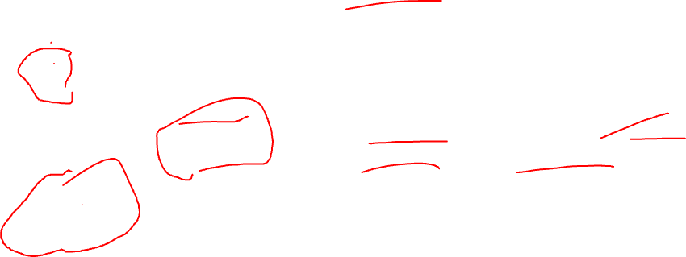
Galeri Arsitektur Tambahan (19)
Galeri Arsitektur Tambahan (20)
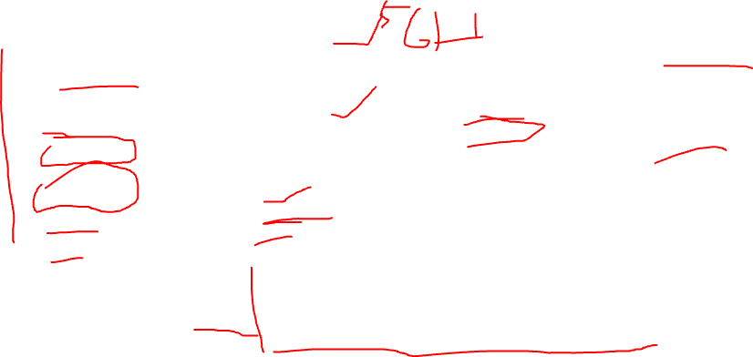
Galeri Arsitektur Tambahan (21)
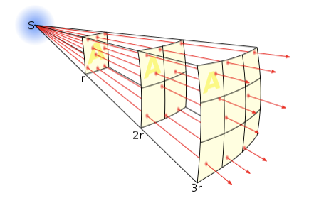
Galeri Arsitektur Tambahan (22)
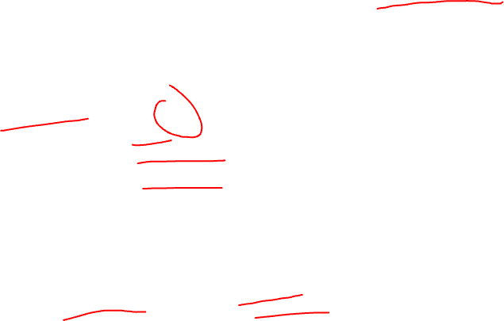
Galeri Arsitektur Tambahan (23)

Galeri Arsitektur Tambahan (24)

Galeri Arsitektur Tambahan (25)
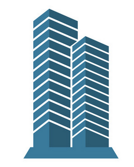
Galeri Arsitektur Tambahan (26)
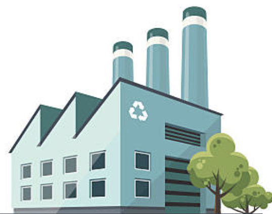
Galeri Arsitektur Tambahan (27)
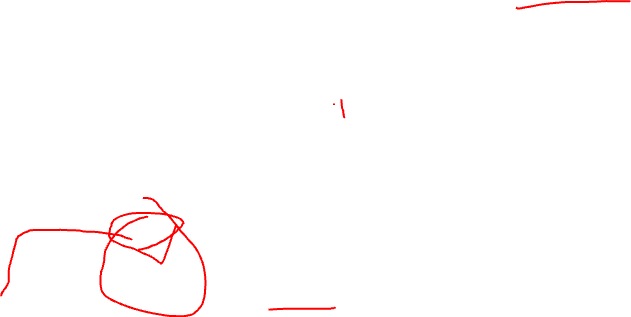
Galeri Arsitektur Tambahan (28)
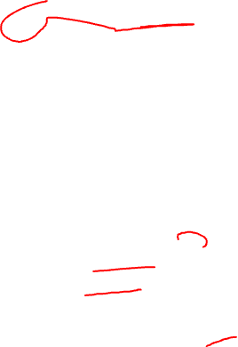
Galeri Arsitektur Tambahan (29)
Galeri Arsitektur Tambahan (30)
Galeri Arsitektur Tambahan (31)
Galeri Arsitektur Tambahan (32)
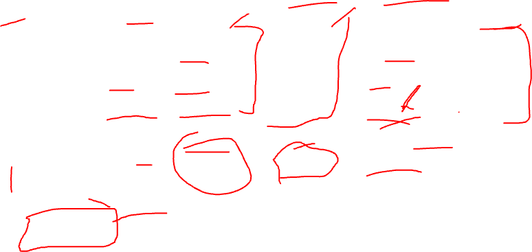
Galeri Arsitektur Tambahan (33)
Galeri Arsitektur Tambahan (34)
Galeri Arsitektur Tambahan (35)
Galeri Arsitektur Tambahan (36)
Galeri Arsitektur Tambahan (37)
Galeri Arsitektur Tambahan (38)
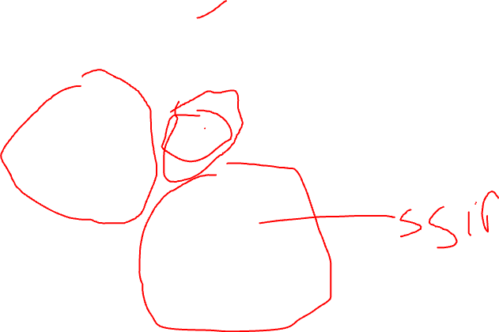
Galeri Arsitektur Tambahan (39)
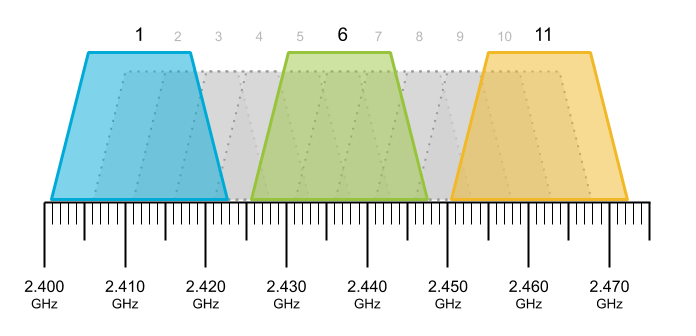
Galeri Arsitektur Tambahan (40)
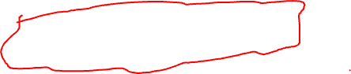
Galeri Arsitektur Tambahan (41)
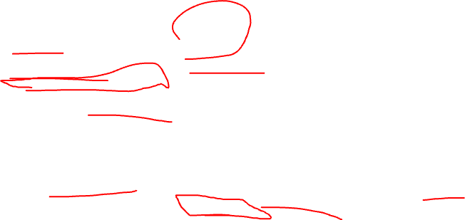
Galeri Arsitektur Tambahan (42)
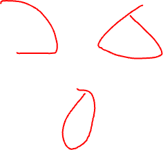
Galeri Arsitektur Tambahan (43)
Galeri Arsitektur Tambahan (44)
Galeri Arsitektur Tambahan (45)
Galeri Arsitektur Tambahan (46)
Galeri Arsitektur Tambahan (47)
Galeri Arsitektur Tambahan (48)
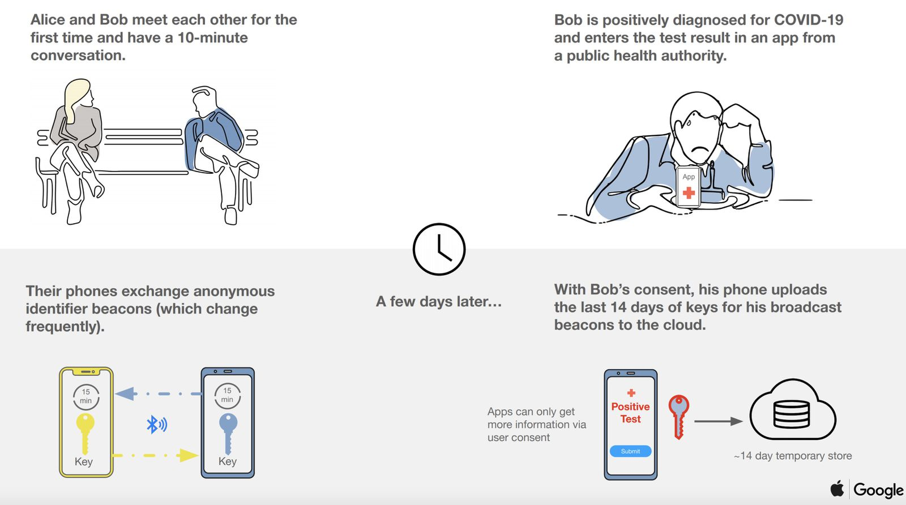
Galeri Arsitektur Tambahan (49)
Galeri Arsitektur Tambahan (50)
Galeri Arsitektur Tambahan (51)
Galeri Arsitektur Tambahan (52)
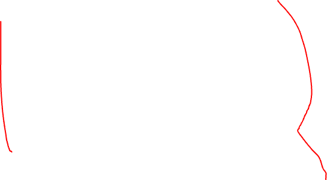
Galeri Arsitektur Tambahan (53)

Galeri Arsitektur Tambahan (54)

Galeri Arsitektur Tambahan (55)
Galeri Arsitektur Tambahan (56)
Galeri Arsitektur Tambahan (57)
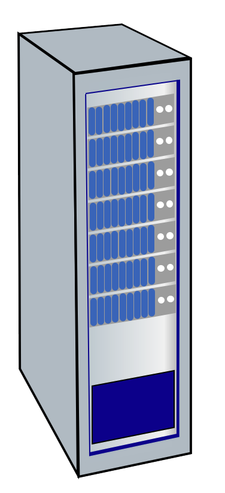
Galeri Arsitektur Tambahan (58)
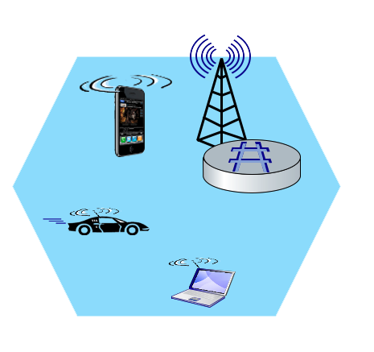
Galeri Arsitektur Tambahan (59)
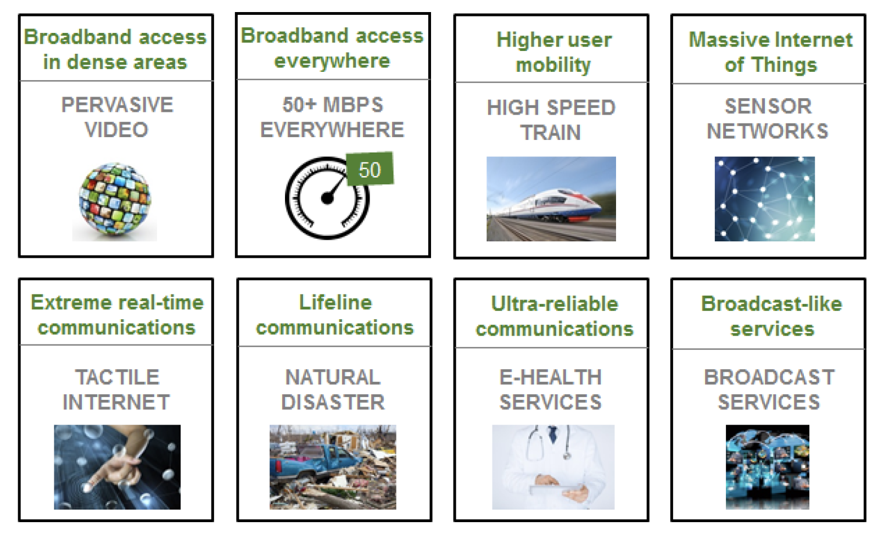
Galeri Arsitektur Tambahan (60)
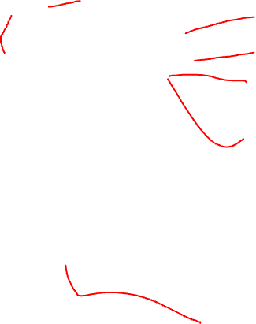
Galeri Arsitektur Tambahan (61)
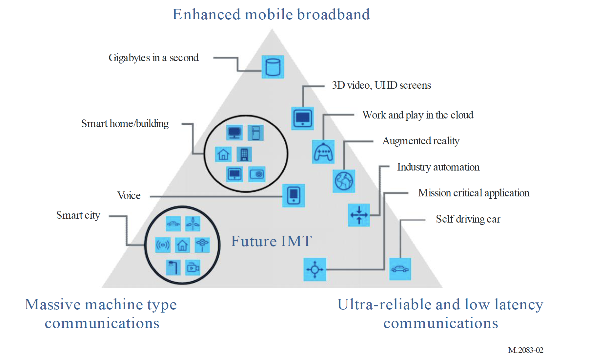
Galeri Arsitektur Tambahan (62)
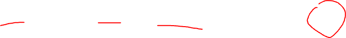
Galeri Arsitektur Tambahan (63)
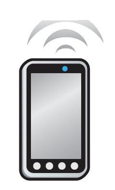
Galeri Arsitektur Tambahan (64)